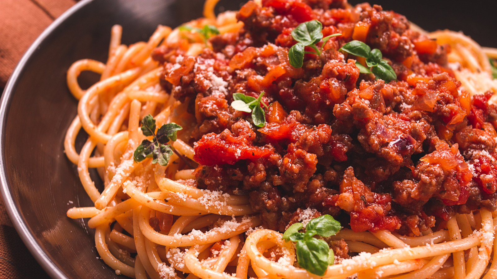

Bolognese Sauce

Description
Bolognese sauce, known in Italian as ragù alla bolognese or ragù bolognese, is the main variety of ragù in Italian cuisine.
It is associated with the city of Bologna.
Ragù alla bolognese is a slowly cooked meat-based sauce, and its preparation involves several techniques, including sweating, sautéing,
and braising.
Ingredients
- 2 tablespoons butter
- 1 tablespoon olive oil
- 1 cup finely diced onion
- ½ cup finely diced celery
- ½ cup finely diced carrot
- 1 pinch salt
- 1 ½ pounds ground beef
- 1 ½ teaspoons salt
- ⅛ teaspoon ground nutmeg
- 1 pinch cayenne pepper, or to taste
- freshly ground black pepper to taste
- 1 ½ cups 2% milk
- 2 cups white wine
- 1 (28 ounce) can whole Italian plum tomatoes (preferably San Marzano)
- 2 cups water, or as needed
Steps
- Melt butter with olive oil in a large saucepan over medium heat. Add onion, celery, carrot, and 1 pinch salt; cook and stir until onion turns translucent, about 5 minutes.
- Stir ground beef into vegetables; cook and stir until meat is crumbly and no longer pink, about 5 minutes. Season with 1 1/2 teaspoons salt, nutmeg, cayenne pepper, and black pepper.
- Pour milk into ground beef mixture and bring to a simmer. Cook, stirring frequently, until most of the milk has evaporated and the bottom of the pan is still slightly saucy, about 5 minutes.
- Increase heat to medium-high and pour in white wine; cook and stir until wine has mostly evaporated, about 5 minutes.
- Pour tomatoes with juice into a large mixing bowl; crush them with your hands until they resemble a chunky sauce. Pour tomato mixture into ground beef mixture; fill the tomato can with 2 cups water and stir into sauce. Bring to a boil.
- Reduce heat to low and simmer, stirring often, until mixture cooks down into a thick sauce, at least 3 hours but preferably 4 to 6 hours. Skim fat from the top of sauce if desired. Add more water if sauce is too thick. Taste and adjust seasonings before serving.
Home